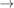

setupArena: Fonction de positionnement des cibles et des obstacles
Sommaire
- Introduction
- Importer la configuration courante
- Déplacement de cibles/obstacles
- Ajout de cibles/obstacles
- Suppression de cibles/obstacles
- Exporter une configuration comme scénario courant
- Importer un scénario de base
- Créer un nouveau scénario
- Sauvegarder une configuration dans un fichier
- Charger un fichier personnel
- Ouverture du modèle Simulink
Introduction
La fonction setupArena permet de gérer des configurations d'arène (position des cibles et des obstacles), afin de pouvoir les utiliser lors de simulations.
Importer la configuration courante
L'importation de la configuration courante de l'arène peut se faire de deux façons :
- En allant dans le menu Import  From Workspace
- En cliquant sur le bouton correspondant dans la barre d'outils

Déplacement de cibles/obstacles
Le déplacement des cibles et des obstacles se fait tout simplement en cliquant-glissant les éléments dans l'arène. Il est important de ne pas laisser d'éléments superposés, ce qui pourrait entraîner des comportements non prévus lors de la simulation.

Ajout de cibles/obstacles
L'ajout de cibles et d'obstacles peut se faire de deux façons :
- En allant dans le menu Edit Add Target ou Add Obstacle
- En accédant au menu contextuel de l'arène (clic-droit sur l'image de fond) et en sélectionnant Add Target ou Add Obstacle

Suppression de cibles/obstacles
La suppression de cibles et d'obstacles peut se faire de deux façons :
- En sélectionnant une cible ou un obstacle (clic souris), puis an allant dans le menu Edit Delete Target/Obstacle
- En accédant au menu contextuel de la cible ou de l'obstacle (clic-droit) et en sélectionnant Delete Target ou Delete Obstacle respectivement

Exporter une configuration comme scénario courant
Exporter la configuration actuelle comme scénario courant (c'est-à-dire pour l'utiliser en simulation) peut se faire de deux façons :
- En allant dans le menu Export To Workspace
- En cliquant sur le bouton correspondant dans la barre d'outils

Importer un scénario de base
Importer un des scénarios de base fournis avec le package se fait simplement en allant dans le menu Import Scenario X :

Créer un nouveau scénario
Créer un nouveau scénario à partir de rien se fait de deux façons :
- En allant dans le menu File New
- En cliquant sur le bouton correspondant dans la barre d'outils
Dans tous les cas une nouvelle fenêtre s'ouvre demandant le nombre de cibles et d'obstacles à ajouter

Sauvegarder une configuration dans un fichier
Sauvegarder une configuration dans un fichier afin de pouvoir la réutiliser se fait de deux façons :
- En allant dans le menu File Save ou SaveAs...
- En cliquant sur le bouton correspondant dans la barre d'outils

Charger un fichier personnel
Charger une configuration précédemment enregistrée peut se faire de deux façons :
- En allant dans le menu File Open
- En cliquant sur le bouton correspondant dans la barre d'outils

Ouverture du modèle Simulink
Il est possible d'ouvrir le modèle Simulink de simulation (SimulationModel.slx) :